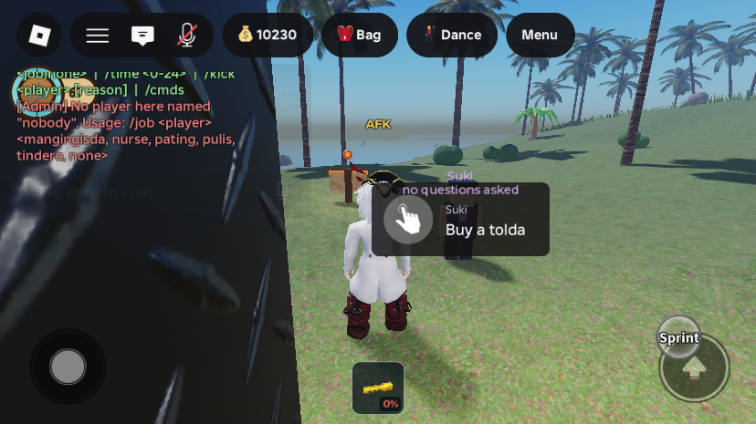

A shark explores nothing in the cave; admin chat commands
Not live yet. Like the other shark updates today, this reaches the published game only when the place is published from Studio.
What was asked
- "Shark exploring cave will not count as player explored the cave system."
- "Create me an admin command you think I can use." The earlier
/givewas folded into a small set.
What changed
1. A Pating in the cave earns nothing
- Exploration (
CaveExplorationService.scanPlayer): skipped for aSharkRoleplayer, so a shark gets no chambers, no "New chamber found" call-outs, and no exploration badges or titles (Bagong Maninisid through Scuba Diving Professional). This is checked by position on the server every 0.6 s, so it can't be claimed any other way. - The cave's other rewards now also refuse a shark on the server. Its screen already hid them (round 2), but the server did not check:
- Lung Coral breath upgrades and the Perlas Hollow pearl (
CaveBootstrap); - the Kristal ng Kailaliman (
CaveCrystalService); - dead-end hoards (
CaveHoardService.claim); - writing a cave slate (
CaveSignService's write remote).
- Lung Coral breath upgrades and the Perlas Hollow pearl (
2. Admin chat commands

| Command | What it does |
|---|---|
/cmds (or /admin) | Lists the commands. |
/give <player> <amount> (or /givepeso) | Peso to anyone on the server, 1–100,000, through AdminService.GrantShells (ledger "AdminGrant"). |
/tp <player> (or /goto) | Go to them. |
/bring <player> | Bring them to you. Refused while they are being revived at the Health Post. |
/job <player> <job|none> | Set or clear anyone's job for free: no entry fee, no re-take wait, no cap. Jobs: mangingisda, nurse, pating, pulis, tindero. /job me pating makes testing the shark free; /job me none hands it back. |
/time <0-24> | Sets the island clock (/time 13 midday, /time 22 night). DayNightCycle carries on from there. |
/kick <player> [reason] | AdminService.KickPlayer. Never yourself or another admin. |
- A
<player>isme, or the start of a username or display name. If it matches several players or nobody, you're told. - Admins only (
AdminConfig.IsAdmin: the place's creator plusAdminUserIds). Anyone else typing them gets no reply, and none of them appear in chat autocomplete. - Replies: the first
/giveanswered through the dashboard'sAdminFeedbackline, but that line only shows while the dashboard panel is open, so a chat command's answer was invisible. Chat commands now answer through a newAdminChatReplyremote, whichAdminDashboardControllershows as a system line in the admin's own chat. RoleService.Claim(player, roleKey, free)gained thefreeflag that/jobuses. Ordinary claims from the work board are unchanged.
All changes
| DataModel path | What | |
|---|---|---|
| edited | ServerScriptService.CaveExplorationService | scanPlayer returns for a SharkRole player. |
| edited | ServerScriptService.CaveBootstrap | Lung Coral and Perlas Hollow prompts refuse a shark. |
| edited | ServerScriptService.CaveCrystalService, CaveHoardService, CaveSignService | kristal pickup, hoard claim and slate writing refuse a shark. |
| edited | ServerScriptService.AdminBootstrap | The command set (COMMANDS, findPlayer, reply, GIVE_MAX 100000), one TextChatCommand per command named Admin_<name> under TextChatService.TextChatCommands (the earlier AdminGive is removed at start). |
| edited | ServerScriptService.RoleService | Claim(player, roleKey, free): free skips the fee, the re-take wait and the cap. |
| edited | StarterPlayer.StarterPlayerScripts.AdminDashboardController | Shows AdminChatReply messages as RBXSystem:DisplaySystemMessage lines (green/red, escaped). |
| remote | ReplicatedStorage.Remotes.AdminChatReply | server → one admin client. Created by AdminBootstrap. |
All scripts were written through ScriptEditorService:UpdateSourceAsync and compile. No world edits.
Testing
Solo playtests, each ended with a Server-side kick. The data lock was released afterwards, and there were no server script errors.
- Shark in the cave: the shark was placed in four chambers the account had not explored (SilidAgosLihim, RestJ, SilidBituinBaha, RestF).
CaveExploredstayed at 41 throughout, with no call-outs. The human side was deliberately not run, so the account didn't get chambers it hadn't really explored. That path's code is unchanged. - Commands, each sent through chat (
RBXGeneral:SendAsync):/cmds: the list./time 13: clock 13.0./job me pating:SharkRoleon. No ledger entry: the saved balance stayed 10230, and the last ledger line was the owner's own live-game job fee from earlier./job me none: role cleared./job me pilot: "No job called "pilot"" with the list./tp me,/bring me: "Can't reach them right now"./kick me: refused./tp nobody: "No player here named "nobody""./time 30: usage.
TextChatService.MessageReceivedand on screen (see the image).
The owner's live-game session in between shows in the ledger: an AdminGrant of 10,000 and a Pating fee of 100. Neither came from this testing. The saved balance at the end is 10,230.
Still unverified
/tp,/bring,/kickand/giveagainst a second real player (the name matching is the same code for everyone).- The other cave-reward guards (coral, pearl, kristal, hoard, slate) are one-line checks on the attribute that was tested for exploration. They weren't each triggered by a shark.